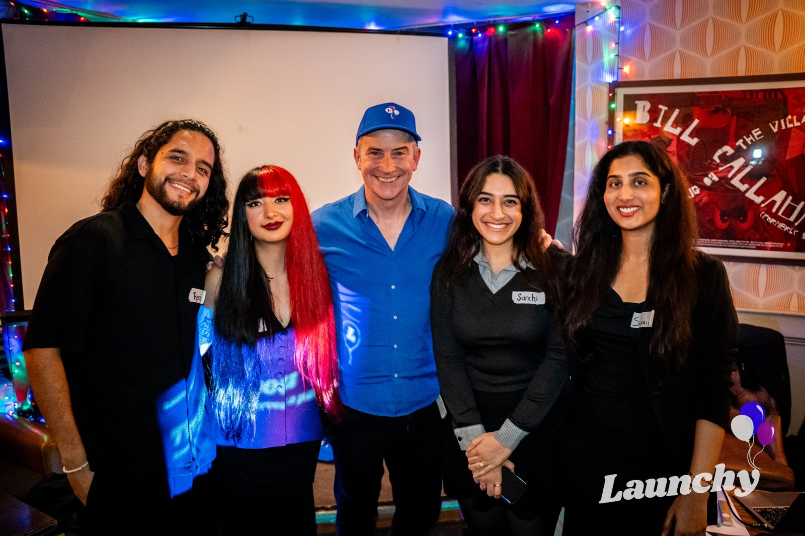
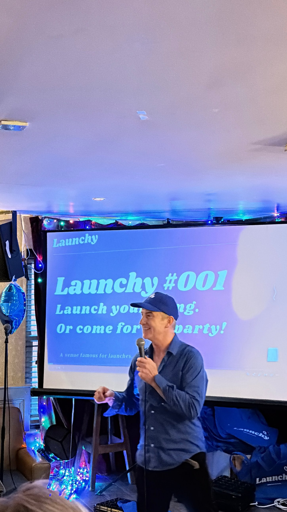
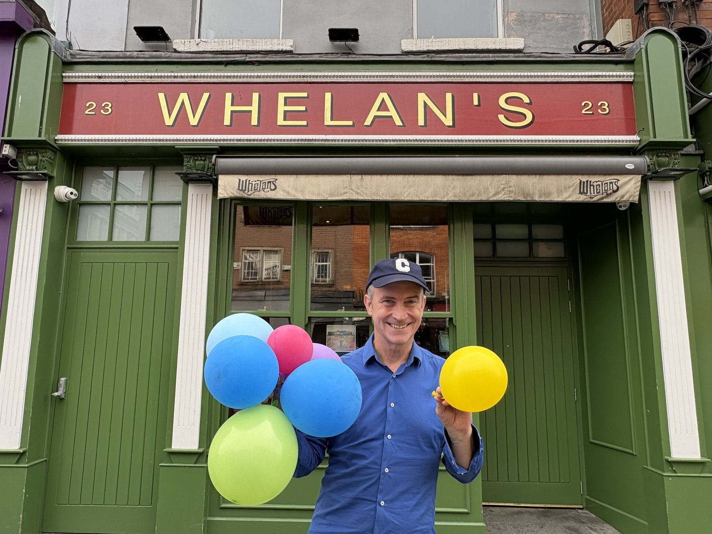
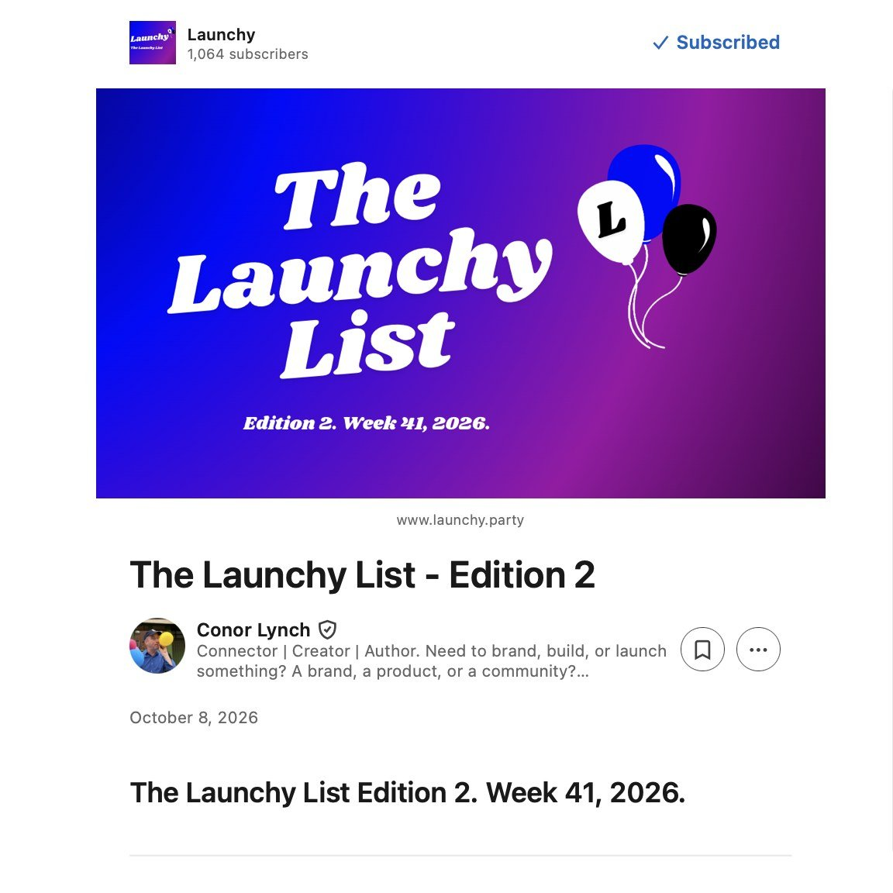

The setup
Launchy is a Dublin launch night where founders, creators and makers stand up and present what they are building. The first one, Launchy #001, was set for 29 September 2026 at The Parlour Bar in Whelan's. I joined the team in August as Marketing Assistant, with a new event, a new brand and a room to fill.
The insight
Founders show up for other founders. Nobody comes to a launch night for the venue. They come to watch someone like them take the risk of showing unfinished work, and to be in the room when it happens. So the marketing had to sell the people on stage and the company in the room, not the event itself.
The work
Registrations. I set up and managed the event listings on Eventbrite and Meetup, and looked after registrations from the first sign-up to the door on the night.
Outreach. I created, tested and sent an email campaign to nearly 2,000 contacts, using an AI workflow to personalise messages for media, podcasts and enterprise hubs.
Press and social. I prepared the press release, created content for the founder's LinkedIn, and worked with a designer on the social graphics.
On the night. I liaised with the venue, sponsors and goodie bag partners on branded items, signage and logistics, and helped coordinate the 12 founders presenting.
Tracking. I kept the sponsor list, media contacts and content schedule up to date, and compiled the registration and attendance figures afterwards.


The Launchy List
An event lasts one night. The audience should last longer. The Launchy List is a newsletter on who is launching what in Ireland. I prepare each edition, and built an AI workflow that handles the research and source-checks every launch featured.
It reached nearly 800 subscribers in its first two weeks, and stands at 1,064 after two editions.

The outcome
Tickets booked
Across Eventbrite and Meetup, approximately.
People in the room
On the night, approximately.
Newsletter subscribers
After two editions of The Launchy List.
Contacts reached by email
Nearly, in one personalised campaign.
The founder wrote up the journey from concept to launch night. Read the founder's write-up or see my post on LinkedIn.
What I took from it
Filling a room is not one big push. It is dozens of small, well-timed ones: a listing that reads clearly, a reminder that lands on the right day, a list that is always up to date. Launchy taught me that event marketing rewards the person who stays organised the longest.